Timeline of the case
Eleven years, 87 documents
From the lease-management agreement in Antibes (1987) to the judgment of the Court of Cassation (2002) — the whole case file, in the order of the proceedings.
The 87 documents
Cleaned, OCR-processed, dated. Each document opens online in the viewer.
Rulings
9 documentsJudgments and orders.
Written submissions
20 documentsWritten submissions, briefs, statements and writs of summons of the parties.
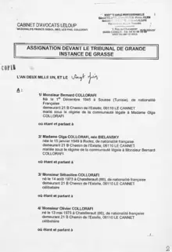
20 Jun 2001 ›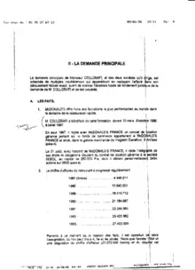
15 Jan 1998 ›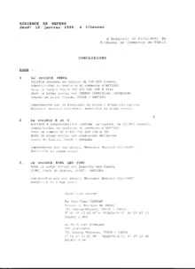
15 Jan 1998 ›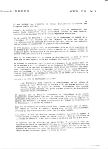
9 Feb 1998 ›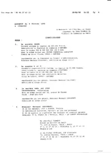
9 Feb 1998 ›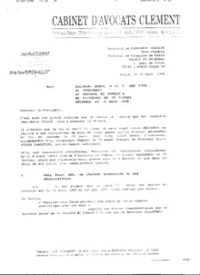
16 Mar 1998 ›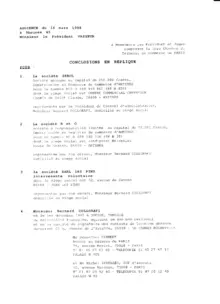
16 Mar 1998 ›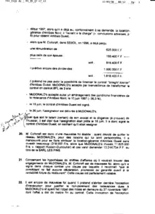
16 Mar 1998 ›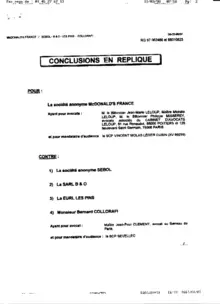
16 Mar 1998 ›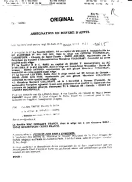
29 May 1998 › 9 Jun 1998
›
9 Jun 1998
›
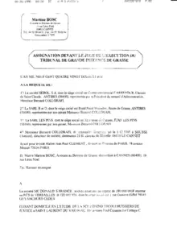
9 Jun 1998 ›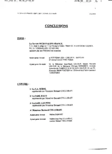
25 Jun 1998 › 25 Jun 1998
›
25 Jun 1998
›
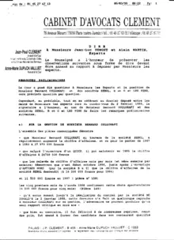
4 Mar 1999 ›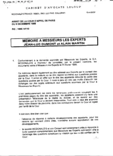
16 Apr 1999 ›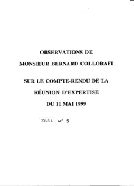
16 Jun 1999 ›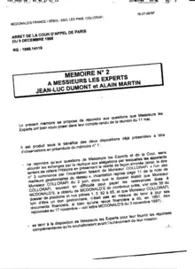
16 Jul 1999 ›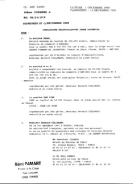
14 Dec 1999 ›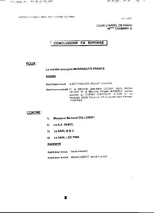
14 Dec 1999 ›Expert reports
5 documentsCourt-ordered expert assessment and reports.
Correspondence
28 documentsRegistered letters between Collorafi, McDonald's and the lawyers.
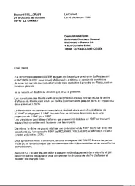
16 Dec 1996 ›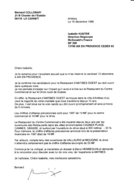
16 Dec 1996 ›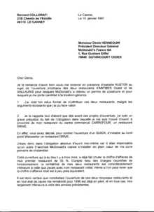
10 Jan 1997 ›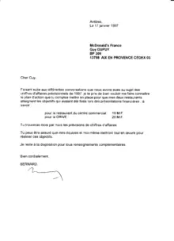
17 Jan 1997 ›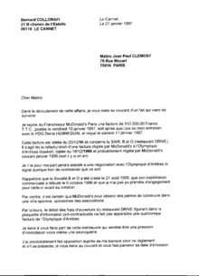
27 Jan 1997 ›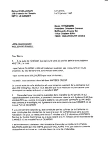
31 Jan 1997 ›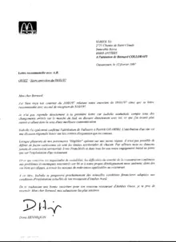
12 Feb 1997 ›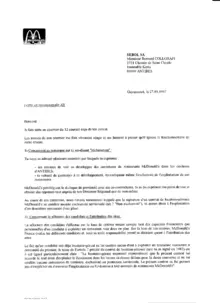
27 Mar 1997 ›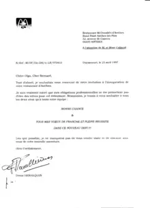
25 Apr 1997 ›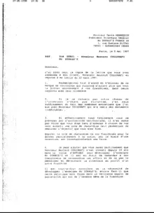
5 May 1997 ›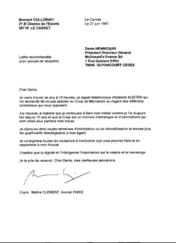
27 Jun 1997 ›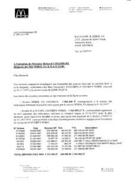
22 Jul 1997 ›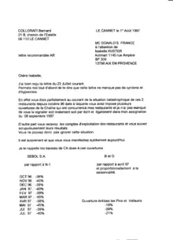
1 Aug 1997 ›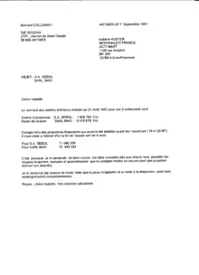
1 Sep 1997 ›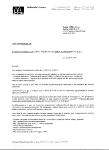
22 Sep 1997 ›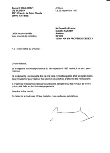
23 Sep 1997 ›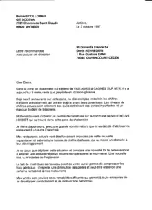
3 Oct 1997 ›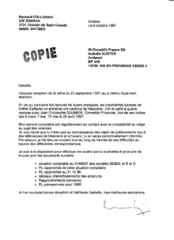
9 Oct 1997 › 20 Oct 1997 › 2 Feb 2002 › 3 Feb 2002 › 4 Feb 2002 › 5 Feb 2002 › 6 Feb 2002 › 20 Mar 2000 › 21 Mar 2000 › 22 Mar 2000 › 23 Mar 2000 ›Cassation & ECHR
11 documentsAppeal to the Court of Cassation, applications, deliberations and statements of claims.
Press
9 documentsPress coverage of the case.
References & legal scholarship
5 documentsLegal texts, fundamental rights and legal scholarship gathered in the case file.